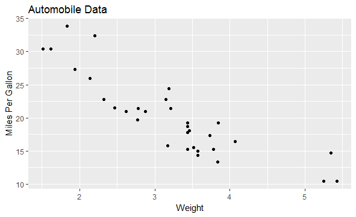
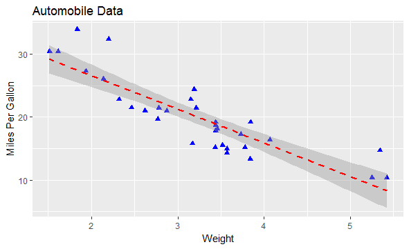

Construct graphs from GGPLOT
Introduction
Chapter 3 (“Data visualization”) of the open source text, R for Data Science by Garrett Grolemund and Hadley Wickham, is another excellent resource for learning more about ggplot2. The link is posted on D2L. Also the link for all exercises is posted. This resource goes into much greater details on geometric objects, aesthetic mappings, position adjustments, and coordinate systems. It also covers the use of ggplot2 in graphing statistical transformations and concludes with a discussion of the layered grammar of graphics.
Knowledge
The R function to generate a ggplot is
ggplot(data= , aes(x= , y= ))+geom_point ()+las (title= , y= , x= )
The arguments:
data: dataset name
aes(x= ,y= ): x variable name and y variable name
geom_point: plot points; can be a different geom function to generate a line chart, for example, geom_line
las (title= , y= , x= ): label the title and x- and y-axis
Let’s generate a scatter plot using the mtcars data frame in the base installation of R; it contains automotive details on 32 automobiles. The code below produces the plot in figure 1 which is a scatterplot of automobile weight by mileage.

Figure 1. Scatterplot of automobile weight by mileage.
Let’s break down how the plot was produced. The ggplot( ) function initializes the plot and specifies the data source (mtcars) and variables (wt, mpg) to be used. The options in the aes( ) function specify what role each variable will play. (aes stands for aesthetics, or how information is represented visually.) Here, the wt values are mapped to distances along the x-axis, and mpg values are mapped to distances along the y-axis. The ggplot( ) function sets up the graph but produces no visual output on its own. Geometric objects (called geoms for short), which include points, lines, bars, box plots, and shaded regions, are added to the graph using one or more geom functions.
Options to geom_point( ) set the point shape to triangles (pch=17), double the points’ size (size=2), and render them in blue (color=”blue”). The geom_smooth( ) function adds a “smoothed” line. Here a linear fit is requested (method=”lm”) and a red (color=”red”) dashed (linetype=2) line of size 1 (size=1) is produced. By default, the line includes 95% confidence intervals (the darker band).
The ggplot2 package provides methods for grouping and faceting. Grouping displays two or more groups of observations in a single plot. Groups are usually differentiated by color, shape, or shading. Faceting displays groups of observations in separate, side-by-side plots. The ggplot2 package uses factors when defining groups or facets.
Key Points to Remember
The R function ggplot() provides methods for complex graphing. The geom_ option provides the choice of graph.
Practice and Reflection
Practice
Example 1: Create a scatter plot to show the relationship between automobile weight and gas mileage, with a superimposed line of best fit and 95% confidence region.
Solution:

Figure 2. Scatterplot of automobile weight by gas mileage, with a superimposed line of best fit and 95% confidence region.
Example 2: Applying grouping and faceting to the mtcars data frame. First, the code below transform the am, vs, and cyl variables into factors.
Reflection
Activity 1: Generate a scatterplot showing the relationship between horsepower and gas mileage separately for transmission and engine type.
Assessment
Generate a scatter plot for the R data Orange to show the relationship between the variables age and circumference for each type of tree.